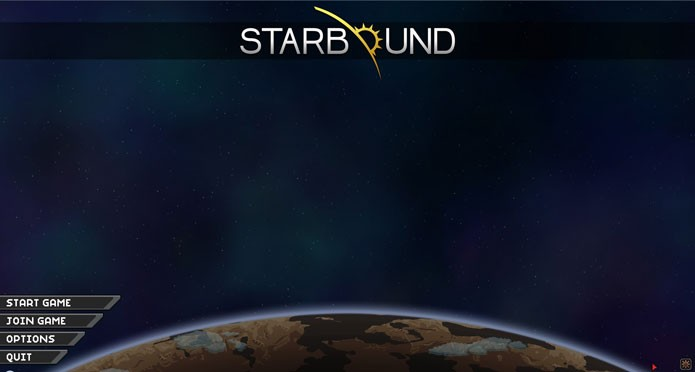
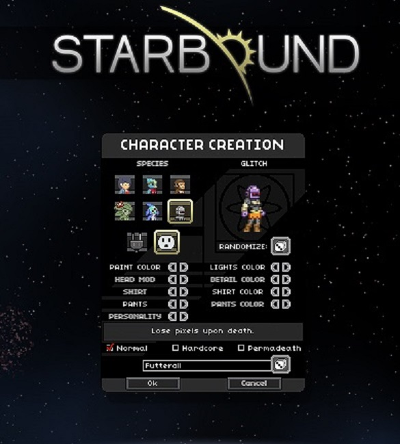
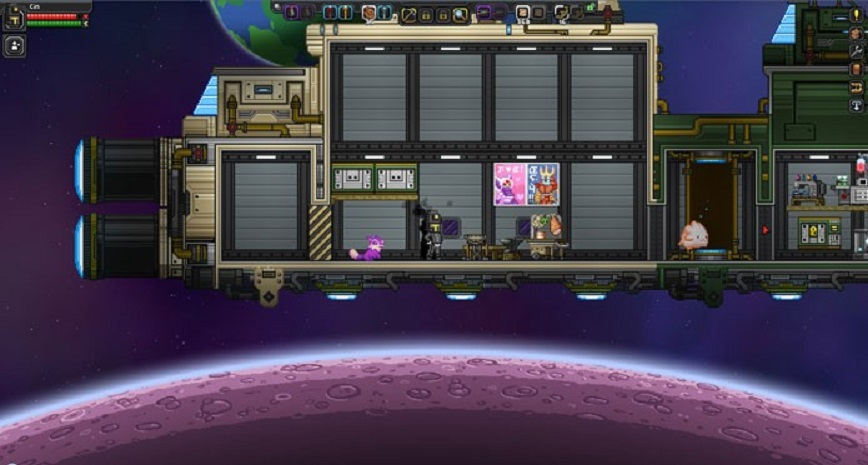
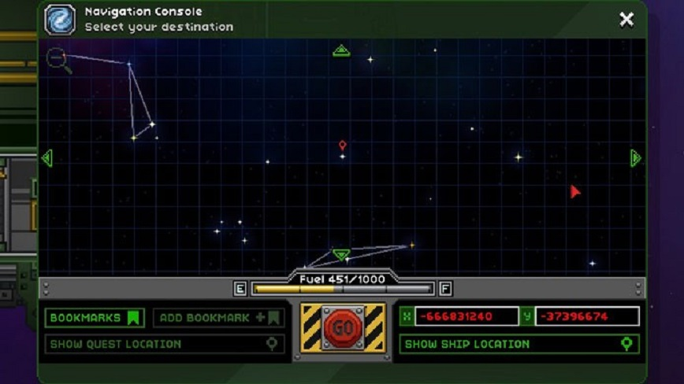
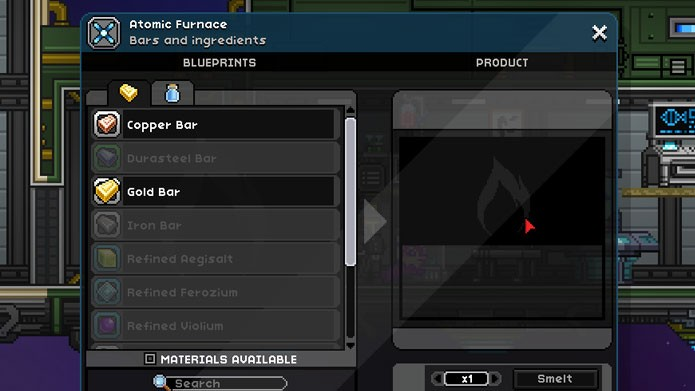

algumas imagens do jogo
Starbound possui um modo campanha para um jogador e outro com multiplayer, onde você pode explorar mundos de outros jogadores ou jogar no seu em modo cooperativo. O primeiro conta com missões que liberam novos itens, locais e melhorias para sua nave. Contudo, ele também te deixa livre para explorar outros planetas disponíveis no mapa. O multiplayer também se passa no mundo da campanha. Para chamar um amigo para este modo, ele deve entrar no seu jogo clicando em”Juntar-se à Partida” no Steam. Os dois podem cooperar e até mesmo deixar itens e construções no servidor do outro.
Tela inicial do jogo
O primeiro passo antes de começar a jogar Starbound é a criação de personagem. Selecione um dos espaços vazios para começar a criar seu personagem.Há sete classes disponíveis, entre elas: Humano, Avian, Apex, Floran, Hylotl, Glitch e Novakid. A escolha de raça não afeta a jogabilidade, apenas a estética do personagens e o visual de seus equipamentos. Ou seja, você está livre para customizar e monta-lo da forma que quiser. A segunda parte da criação também é uma das mais importantes: você deve escolher o nível de dificuldade. Em Starbound, você pode experimentar a campanha no modo Casual, Survival e Hardcore. Contudo, não é possível mudar o nível após a escolha. No primeiro, o personagem pode morrer várias vezes, perdendo apenas 10% dos pixels (dinheiro do jogo). Já no modo Survival, ele perde todos os itens do inventário( com exceção de armas e equipamentos ) e 30% dos pixels. E como o nome sugere, o Hardcore é o modo mais difícil, pois adiciona morte permanente a sua campanha.
imagem da tela de criação de personagem no jogo
Aqui está uma lista com os comandos essenciais do jogo:
| A | Mover personagem para a esquerda | E | Interagir com objetos |
| D | Mover personagem para a direita | 1-8 | atalhos para itens |
| S | Andar agachado | R | Manipulador de matéria |
| Mouse | Controlar a mira | Esc | Abre o menu |
| Espaço | Pular | I | Abre o inventário |
| S+Espaço | Descer Plataformas | C | Abre o menu de construção |
Os menus do jogo são simples de mexer e ficam dispostos na própria tela, divididos em três partes. O primeiro, à esquerda, mostra as informações vitais do seu personagem, como vida, energia e os efeitos causados por bônus ou status negativos.
Já na parte central da tela você terá um menu de atalhos, com armas e equipamentos que podem ser usados clicando do 1 ao 8 no teclado. A direita ficam os menus, como inventário, pixels (dinheiro do jogo), aba de construção, codex, teleporte e missões.
O principal objetivo de Starbound é explorar outros planetas, coletando itens para melhorar sua nave, criar nas armas, equipamentos e estações de construção. Na campanha, há missões com diferentes objetivos até mesmo chefes para derrotar. Ela é bem linear e novas missões vão aparecer a medida que você completar as anteriores.
Após a missão inicial, onde você deve consertar a sua nave, você poderá explorar outros planetas. Basta clicar no assento do piloto, na parte frontal da nave e escolher um local para se aventurar. Porém, você deve ter combustível suficiente para viajar até o ponto que deseja. Além disso, dependo da atmosfera do planeta, precisará de certos equipamentos para conseguir respirar ou evitar níveis perigosos de radiação.
O combate em Starbound é bem simples de aprender. Basta equipar uma arma e clicar no inimigo ou criatura para ataca-lo. As armas tem velocidades e distâncias diferentes, algumas também empurram os inimigos para longe. Ao chegar perto de uma criatura, você verá sua barra de vida e informações, como habilidades que ele pode usar.
A criação de itens é essencial em Starbound. Quase tudo no jogo é customizável e pode ser criado a partir da sua nave, se você tiver os materiais e as estações certas. Cada estação serve para confeccionar um tipo de item ou material, e até mesmo para construir outras estações (Mesa do inventor,mesa do engenheiro e mesa do arquiteto). Os materiais tem várias utilidades e podem ser combinados de maneiras diferentes. Use o manipulador de matéria, uma das primeiras ferramentas do jogo, para coletar matéria-prima e desenvolver novos itens. A medida que você conseguir criar novas estações, poderá investir em equipamentos melhores para visitar outras partes do universo. A lista de materiais necessários para montar cada objeto está disponível na própria estação.
